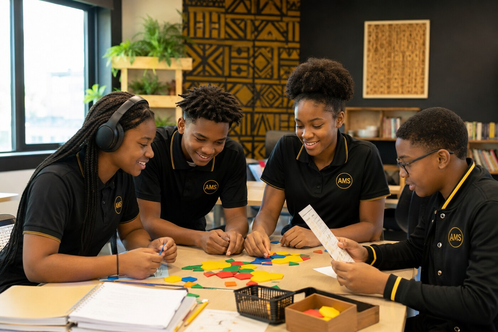
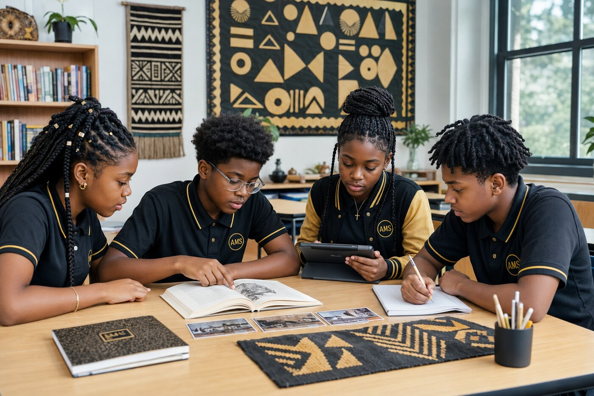
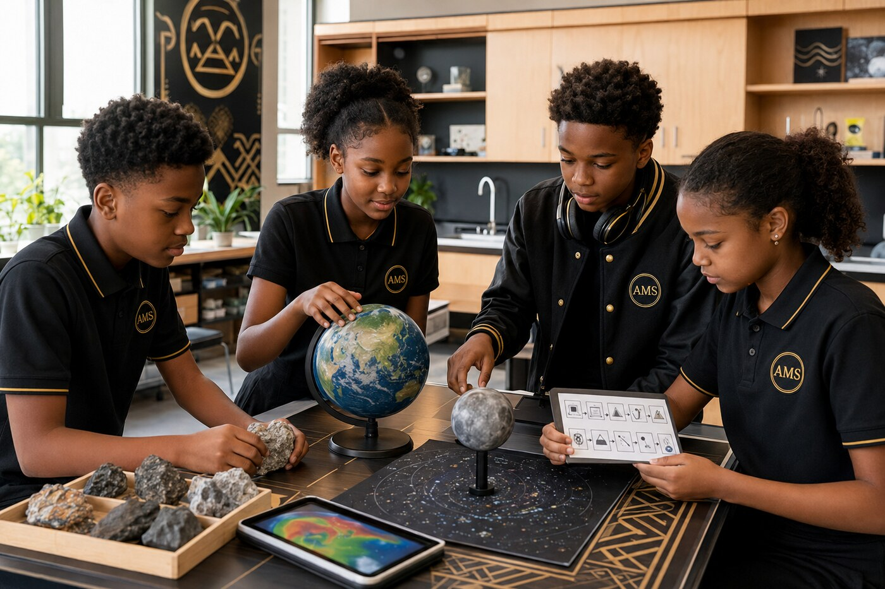
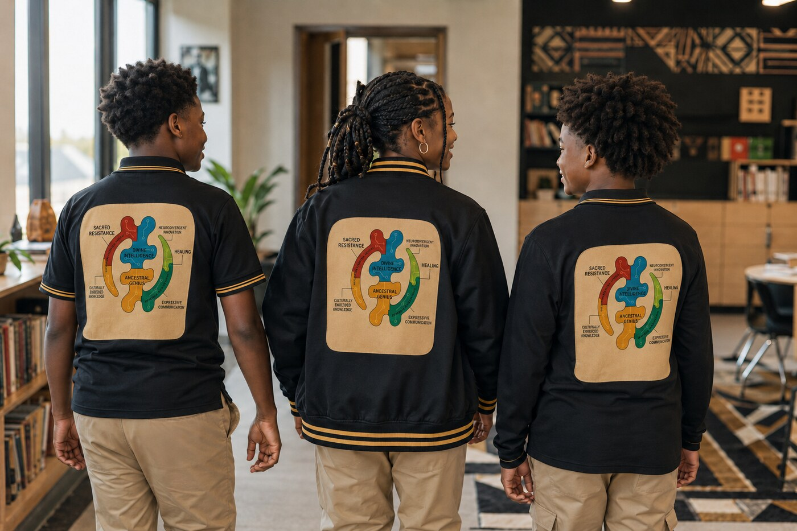

Akan-rooted education for students with exceptionalities
Our Vision
For 7th and 8th graders with intellectual and mental exceptionalities
Rejects one-size-fits-all education models
Rooted in Akan culture and restorative justice
No high-stakes testing
Our School Motto
Rooted in Wisdom. Rising in Purpose.
We are rooted in wisdom.
We honor every mind and every way of learning.
We speak with courage, listen with respect, and create with purpose.
We care for ourselves, one another, our community, and our world.
When harm occurs, we seek truth, repair, and restored belonging.
We carry our ancestors with us as we build a just and joyful future.
We are Aberewa.
We Are Aberewa
Aberewa Middle School is proudly founded and built in New Orleans, Louisiana (USA).
This is not a foreign operation or a vague promise—it is a grassroots, community-rooted school designed for
Black youth with intellectual and mental exceptionalities. We honor our ancestors, draw wisdom from Akan culture, and ground our education in radical care and restorative justice.
Student Support & Enrollment Readiness
Aberewa Middle School is being developed as an inclusive learning community for neurodivergent students and students with disabilities. Our enrollment model will expand in phases so that every student we accept can receive appropriate instruction, accessibility, supervision, and support.
A diagnosis, disability, IEP, communication method, or mobility device will not determine eligibility by itself. Each student will receive an individualized review based on strengths, educational goals, accessibility requirements, family input, and the school’s current ability to implement necessary supports safely and consistently.
Year One Support Capacity
During Year One, we plan to serve students whose programs can be delivered through small classes, structured routines, accessible curriculum, assistive technology, individualized accommodations, and available staffing.
Students with ADHD or executive-functioning differences: Movement opportunities, organizational coaching, flexible pacing, and frequent feedback.
Students with dyslexia, dysgraphia, or dyscalculia: Explicit multisensory instruction, accessible texts, speech-to-text, audiobooks, and manipulatives.
Students with speech or language disabilities: Visual communication, extended processing time, assistive communication, and specialist collaboration when available.
Nonspeaking or minimally speaking students: Support for established AAC, picture-based communication, gestures, typing, or other reliable communication methods.
Students with sensory-processing, anxiety, or emotional-regulation needs: Calm spaces, planned breaks, supportive transitions, and individualized regulation strategies.
Students with mild to moderate intellectual or developmental disabilities: Individualized goals, functional learning, repetition, visuals, and connections between academics and daily life.
Students with physical disabilities: Enrollment when the Year One facility and staff can safely meet the student’s mobility, positioning, accessibility, transportation, and personal-care requirements.
Blind or low-vision students: Enrollment when access can be provided through available digital materials, screen readers, magnification, audio resources, and tactile tools.
Deaf or hard-of-hearing students: Enrollment when effective communication can be provided through available captioning, visual instruction, hearing technology, communication planning, or qualified services.
Planned Capacity Expansion
Some students require specialized personnel, equipment, facilities, or clinical services that may not be fully available at opening. These needs are part of our long-term inclusion plan.
We intend to expand capacity for students who require:
Full-time Braille instruction and orientation-and-mobility services
Full-time sign-language interpretation or a specialized signing environment
Accessible transportation, mechanical lifts, extensive positioning assistance, or intensive personal-care support
Continuous nursing or medically complex care
Dedicated one-to-one or two-to-one staffing throughout most of the school day
Specialized deaf-blind or multiple-disability programming
Intensive feeding, toileting, or healthcare protocols
A secure therapeutic environment for frequent elopement
Clinical and crisis-level behavioral services for persistent aggression, serious self-injury, or conduct presenting an immediate safety risk
This is not a permanent exclusion list. It identifies the services, staffing, training, and facilities the school must develop before responsibly promising these levels of support.
Individualized Readiness Review
Before enrollment, the school will work with each family to understand the student’s strengths, learning methods, IEP or support documents, communication and assistive-technology requirements, mobility and medical needs, sensory supports, successful de-escalation strategies, and required services. Our goal is to make thoughtful, individualized decisions rather than decisions based solely on disability labels.
Year One Launch, Cohort & Staffing Model
Aberewa Middle School is planning a carefully structured seventh-grade launch built around small instructional groups, continuity of support, and accountable special-education leadership. Enrollment targets remain contingent upon securing the required facility, funding, qualified personnel, approvals, and student-support systems.
The Seven-for-Seven Classroom Commitment
Each instructional group of up to seven students will be supported by:
One educator responsible for instruction, progress monitoring, and collaboration; and
One paraprofessional supporting access, participation, regulation, communication, and daily classroom routines.
This model is intended for students with specific learning disabilities, autism, and other disability-related educational needs that fall within the school’s Year One support capacity. Placement will be based on each learner’s individual needs rather than a disability label alone.
Year One planning estimate: 700 seventh graders ÷ 7 students = approximately 100 classroom groups Minimum direct classroom staffing: 100 educators + 100 paraprofessionals
The staffing estimate does not include substitutes, related-service providers, counselors, nurses, behavior-support personnel, operations staff, or administrators.
A Cohort Model Designed for Continuity
Year One: The school will enroll seventh-grade students only.
Year Two: The inaugural seventh-grade cohort advances to eighth grade, and a new seventh-grade cohort enters.
No direct eighth-grade entry: To protect continuity, reduce transition confusion, and establish shared routines, every Aberewa student must begin the program in seventh grade.
This sequence allows students, families, and staff to build relationships and establish individualized supports before the transition to eighth grade. Future total enrollment will be determined by building capacity, staffing, funding, and the school’s ability to maintain its seven-student instructional-group commitment.
Special-Education Leadership
The principal will also oversee special-education coordination, program implementation, compliance systems, and service delivery.
Assistant principals will be trained to support IEP planning, drafting, documentation, progress monitoring, meeting preparation, and related compliance paperwork.
IEPs will remain collaborative team documents developed with families, educators, service providers, evaluators, administrators, and other required participants.
As enrollment grows, leadership assignments and special-education staffing will be expanded so that responsibilities remain manageable, timely, and student-centered.
Founder’s Instructional Role & Personnel Accountability
Founder Antoine L. Mason Sr. plans to serve as an English Language Arts instructor and will not serve as principal. His professional title will be updated after the EdD is formally conferred.
Employment expectations, corrective-action procedures, termination standards, and contract-renewal criteria will be stated in written employee policies and contracts. Personnel decisions will be based on documented performance, professional conduct, student safety, fulfillment of assigned duties, compliance responsibilities, due process, and applicable law.
The educational principles presented in Certified to Teach, Not to Test will help inform the school’s professional culture, while the governing handbook and employment agreements will control formal personnel decisions.
Experience a visual introduction to the spirit and emerging vision of Aberewa Middle School—Akan-rooted learning, neurodivergent possibility, cultural memory, and a new educational dawn.
Our Vision in Action
Concepts for a future Aberewa learning environment: culturally grounded, academically purposeful, sensory-considerate, and designed for neurodivergent students.

Mathematics through collaboration, patterns, manipulatives, and multiple ways to participate.

English Language Arts through reading, storytelling, visual sequencing, writing, and assistive technology.

Geoscience and interstellar science through models, observation, technology, and hands-on investigation.

Uniform concept: black-and-gold polos and structured jackets, with the official Aberewa logo displayed on every uniform back.
Concept visualization notice: These images were created with AI to illustrate the school’s future vision. Every person shown is fictional and is not a currently enrolled student.
Support the early planning and development of an Akan-rooted educational program for neurodivergent students. Learn how current funds are handled and explore our long-term vision for educators, staff, learning resources, and an accessible campus.
Aberewa Middle School does not currently have federal 501(c)(3) recognition. Current payments are not represented as tax-deductible donations.
Explore the Aberewa Model
Interactive Family & Planning Tools
Explore general student-support planning, calculate Seven-for-Seven classroom staffing, and filter the curriculum by subject, Akan-rooted connection, or accessibility support. The tools work privately in your browser and do not collect student information.
Meet Abrafi Mathematics and explore educational AI music, books, future releases, and teacher-centered research designed to support memorable, repetitive learning.